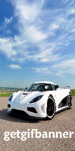
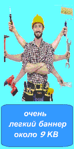
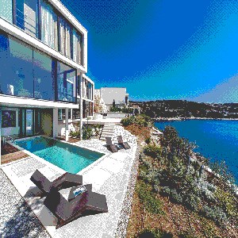
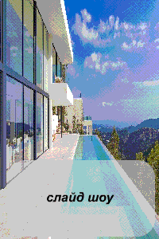
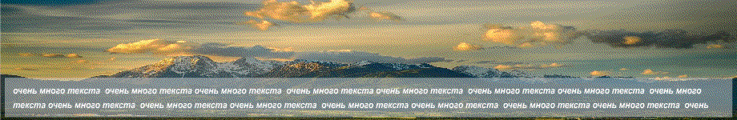
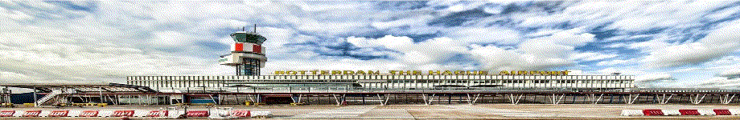

GIF (англ. Graphics Interchange Format «формат для обмена изображениями») — растровый формат графических изображений. Способен хранить сжатые данные без потери качества в формате не более 256 цветов. Не зависящий от аппаратного обеспечения формат GIF был разработан в 1987 году (GIF87a) в фирме CompuServe для передачи растровых изображений по сетям. GIF использует LZW-компрессию, что позволяет сжимать файлы, в которых много однородных заливок (логотипы, надписи, схемы). Долгое время GIF был одним из наиболее распространённых форматов в интернете.
Изображение в формате GIF хранится построчно, поддерживается только формат с индексированной палитрой цветов. Стандарт разрабатывался только для
поддержки 256-цветовой палитры. Формат GIF поддерживает анимационные изображения. Они представляют собой последовательность из нескольких статичных
кадров, а также информацию о том, сколько времени каждый кадр должен быть показан на экране.
source: https://ru.wikipedia.org/wiki/GIF
Здесь Вы можете просмотреть образцы наших баннеров. Обратите что каждый баннер имеет свой номер. Вы можете нажать на баннер для просмотра в новом окне.
| Νο 001 | Νο 002 | Νο 003 | Νο 004 | Νο 005 |
|---|---|---|---|---|
|  |  |  |  |
| No 101 |  |
|---|
| No 102 |  |
|---|
| No 103 |
|---|
*стоимость всех баннеров из каталога 499 руб.
Если Вам понравился один из наших баннеров из каталога, мы сделаем для вас баннер по его образцу. Вы можете оправить нам заявку на электронный почтовый адресс, который указан ниже в контактах. Укажите номер образца который Вам понравился, Ваши предпочтения по наполнению, а также если баннер создается для рекламной сети . Мы с свяжемся с Вами для уточнения всех деталей в ближайшее время.
Для заказа баннера и по другой любой информации пишите на адресс: getgifbanner@protonmail.com
© getgifbanner 2021